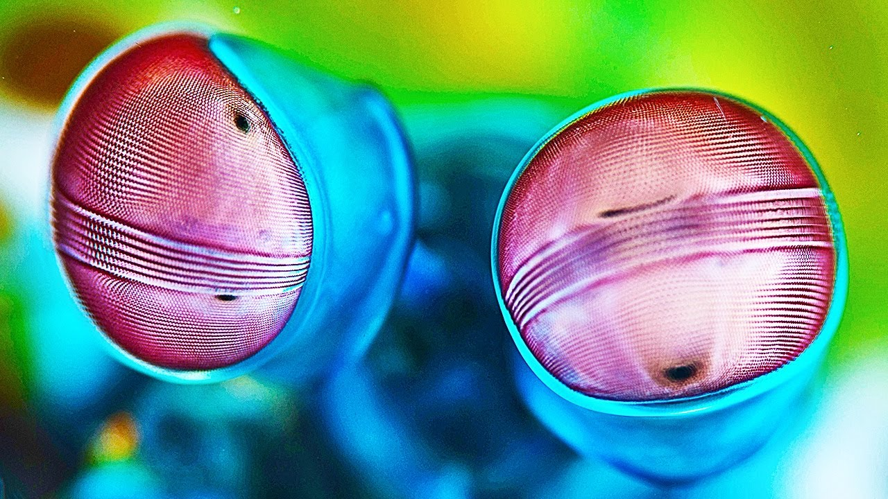

Fatos sobre o Stomatopoda
Possuem uma visão incrível;
Possuem um soco poderoso;
São exclusivamente carnívoros;
O segundo par de patas é muito desenvolvido.
O Stomatopoda é conhecido cientificamente como Odontodactylus scyllarus.
| Classificação científica | |
|---|---|
| Reino: | Animalia |
| Filo: | Crustacea |
| Classe: | Malacostraca |
| Subclasse: | Hoplocarida |
| Ordem: | Stomatopoda |
| Família: | Odontodactylidae |
| Género: | Odontodactylus |
| Espécie: | O. scyllarus |
Esses animais possuem o mais complexo sistema de visão de cores do mundo animal, pois enxergam 12 cores primárias, correspondentes aos 12 pigmentos distintos presentes em sua retina.
Características impressionantes: Visão excepcional.
são capazes de desferir um dos mais rápidos e violentos golpes do reino animal, um soco que pode apresentar a velocidade de um tiro calibre .22 (equivalente a 720 km/h) e uma pressão de impacto de 600 N/cm².
Características impressionantes: Velocidade do soco: 80km/h.